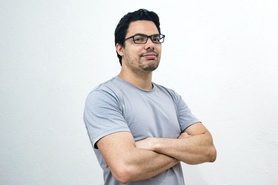
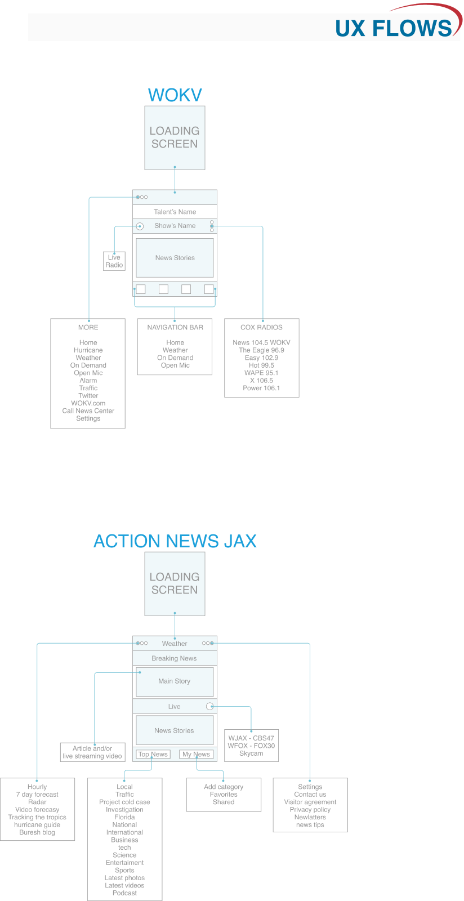
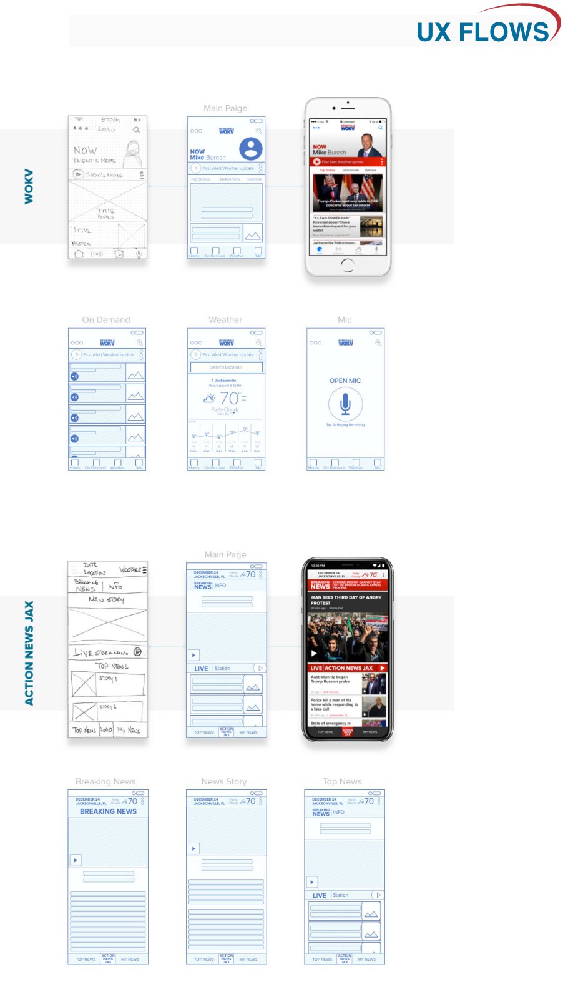
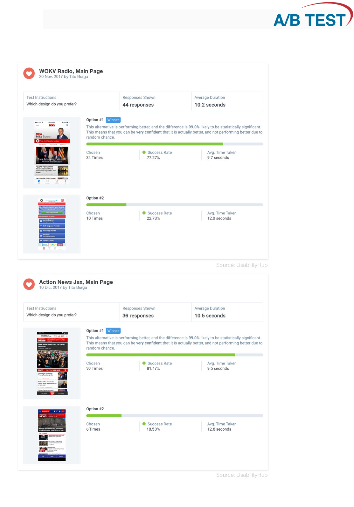
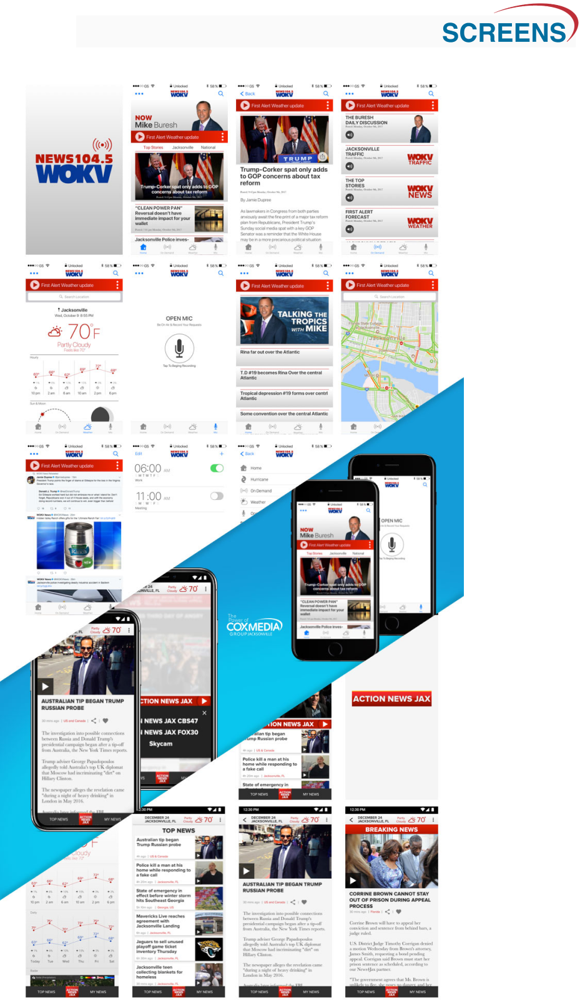

The internet has changed the way we watch the news, and we are now free to choose and find the most relevant information. WOKV and ACTION NEWS JAX can make it easier for users to keep up with the latest local news, breaking news, and weather updates.
The main goal is to re-design both WOKV and ACTION NEWS JAX apps. We are looking for a better user experience and a clean user interface. Also, we want to add unique characteristics for each app — like the option to select radio or TV stations.
Who. This application is intended for users who want to be informed at all times and have news delivered to their mobile devices. What. The user will be able to find recent local, national and international news. Users are also informed of the weather forecast. Where. The user can access the application from any mobile device anywhere. When. The user can access this application anytime. Why. This app can make it easier for users to keep up with the latest news. How. All news stories, breaking news, weather forecasts, traffic updates, and more will be fed from WOKV and ACTION NEWS JAX.
After collecting and comparing information of all people interviewed, it is clear that absolutely everyone is interested in being informed in some way — newspaper, radio, television, or digital. Weather leads as the first alternative when searching for news, followed by breaking news, local and national news, traffic, and international news. When it comes to mobile devices, a large majority prefer to watch live stream TV. Half of the interviewees like the idea of saving the article and reading them later with or without wi-fi. A little more than half, especially young people, like being able to personalize the news according to their preferences. Finally, a large majority do not like alerts or push notifications on the lock screen unless it is breaking news, and a common reason is the desire to be informed at all times in these busy times.
I want to prove the following: that users want to be informed at all times, and anywhere. That users want to have breaking news and weather alerts. That users want to be able to save news stories and read them later, offline if necessary. That users want to have news alerts on locked screens. That users want not only to read articles but also to be able to watch live stream newscasts and events, and to watch videos and news stories.

Contribute to changing the world. Continue with my education. Investigate renewable energy.
Traffic. Lack of resources. Lack of communication.
Chase works at BP as an engineer. He has a Ph.D. in petroleum engineering. His computer and math skills are advanced. He is an environmental protector.
My kids' education. Buy a house. Save money.
Bad teachers. Poor management. Slow internet.
Nina is a single mom of 2 girls. She works at Wells Fargo Bank as a senior accountant. She checks the weather to know how to dress her children for school.



